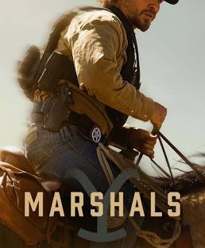

I have really loved watching this show this summer. To like a TV show, I have to have a character (or more than one) to root for. In this show, I’m rooting for a lot of them. We are introduced to a sort of unambitious, unintelligent man who wants to belong somewhere and be liked at the beginning of the show. His name is Jimmy, and when we first meet him, a big man dressed all in black (in every scene; is he a Johnny Cash fan?) named Rip brands him with a cattle brand. Rip is one of the most important characters in the show.